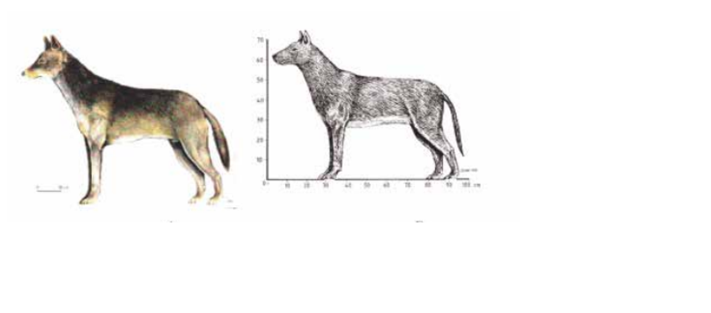

Con base en su variabilidad individual, las alternativas de uso, el espacio de
tiempo en que se les reconoce (primeros 15 siglos de nuestra era) y la diversidad
de culturas, se puede entender que los loberros fueran organismos muy variables
en su aspecto, tanto por la heterogeneidad con que manifestaban los caracteres
de los padres como por los intereses culturales; de esta forma, en los túneles
teotihuacanos, los animales reconstruidos medían hasta 600 mm de alzada y 800
o 900 mm de longitud (5, 9), mientras que los del Templo Mayor (3) rebasaban
los 700 mm de alzada y llegaban a 1000 mm de longitud, lo cual ofrece una idea
de que tan diferentes pudieron llegar a ser de acuerdo a los caracteres genéticos
dominantes

Además de la variabilidad propia de las fuerzas genéticas de lobo y perro
al momento de manifestarse, la cual derivaba en ejemplares “más lobunos” o
“más perrunos”, según la suerte, existe otro aspecto a considerar dentro de este
mosaico de formas y es lo referente a la existencia de loberros de primera o
segunda generación, por decir lo menos. ¿Qué queremos decir con esto? En
todo momento se ha partido de la existencia de un híbrido producto de la cruza
de lobo con perra y ciertamente sería lo más apreciado, sin embargo hay algunos
individuos, por ejemplo de los túneles que se ven “tipo perro” en casi
todo (talla, morfología dental, dimensiones de piezas dentales) y lobo solo en
algunos aspectos (forma de la rama del dentario y del tercer molar inferior), por
lo que queda la duda de si fue un ejemplar en el cual el elemento perro fue por
demás dominante o si más bien fue un loberro hijo de loberro con perro y que el
lobo como tal no fue el padre sino el abuelo
Ciertamente no estamos en la posibilidad de hacer una evaluación objetiva
de los ejemplares a partir de esta propuesta, para así definir loberros de primera
o segunda generación, pero es indudable que entre más fuerte fuera el peso
simbólico del lobo dentro de la concepción de una determinada cultura, más
valor se le daría a un descendiente suyo sin importar que las cruzas del loberro
original se dieran, posteriormente, con perros, hasta que se considerara necesario
revitalizar la sangre lobuna o se perdiera la línea al paso de las generaciones.
<--VOLVER